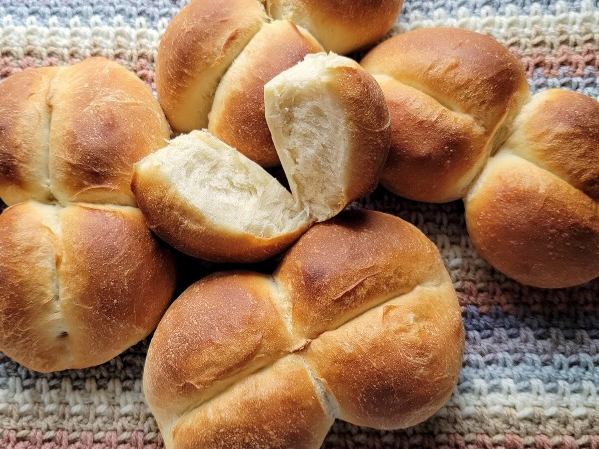

Marraqueta is the most popular bread in Chile and Bolivia, a staple food that is often consumed three times a day. It is made with flour, water, salt, and yeast. Two balls of dough are typically pressed together, then nearly split down the middle before the bread is baked in the oven, usually with a pan of water which gives marraqueta its characteristical crust.
Meal prep time : 40 minutes
Servings : 8